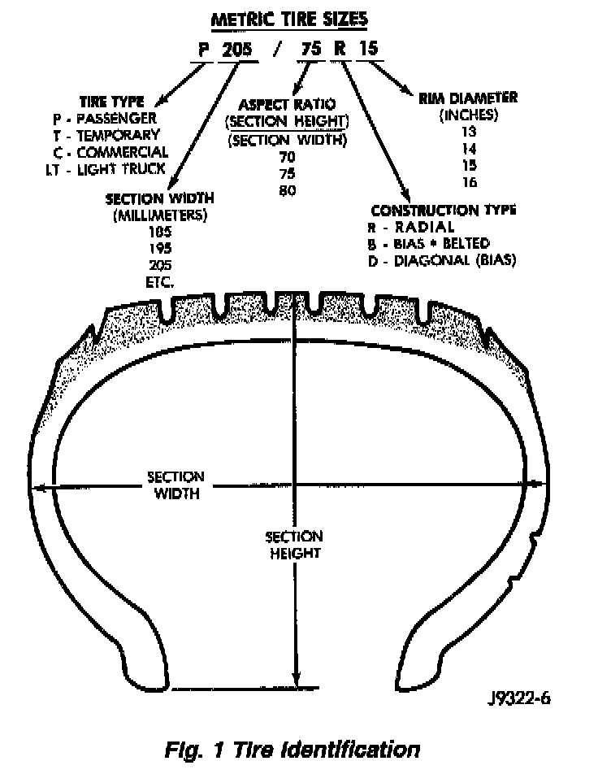

Tires: Application and ID
Fig. 1:

Tire type, size, aspect ratio and speed rating are encoded in the letters and numbers imprinted on the side wall of the tire. Refer to the illustration to decipher the tire identification code.
Performance tires will have a speed rating letter after the aspect ratio number. The speed rating is not always printed on the tire sidewall. The letter S indicates that the tire is speed rated up to 112 mph.
- Q up to 100 mph
- T up to 118 mph
- U up to 124 mph
- H up to 130 mph
- V up to 149 mph
- Z more than 149 mph (consult the tire manufacturer for the specific speed rating)
NOTES:
- An All Season type tire will have either M + S, M & S or M-S (indicating mud and snow traction) imprinted on the side wall.
- Do not install smaller than minimum size tires shown on the tire inflation placard on the vehicle.